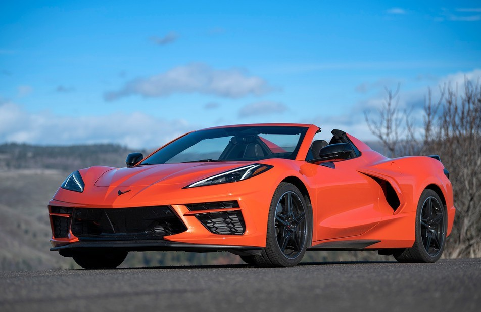

2022 Chevrolet Corvette
by Zach Doell October 7, 2021

The 2022 Chevrolet Corvette claims the top spot in the luxury sports car class, thanks to its value proposition, lightning-quick acceleration, precise handling, comfortable and well-trimmed interior, and intuitive tech features. Is the Chevrolet Corvette a Good Car? The 2022 Chevrolet Corvette is a terrific sports car in just about every measure. The Corvette accelerates ferociously and carves corners with exceptional poise and athleticism while still managing to soak up bumps and dips in the road. The interior is handsome, comfortable, and outfitted with sleek tech features, and there's a surprising amount of cargo space split between front and rear trunks. The kicker is the Corvette's value. This midengine V8 sports car has a roughly $61,000 starting price. Should I Buy the Chevrolet Corvette? The 2022 Chevrolet Corvette is a must-see if you're shopping for a luxury sports car. It can do just about everything that the Porsche 911, Mercedes-AMG GT, and Acura NSX can but at a fraction of the price. Just don't expect to find a manual transmission. The 'Vette is currently automatic-only.
Find a 2022 Chevrolet Corvette for sale near you »
Why You Can Trust Us: 13 Reviews Analyzed
We've analyzed 13 Chevrolet Corvette reviews, as well as data points like reliability scores and fuel economy estimates, to help you make the best car-buying decision possible. This 2022 Corvette review incorporates applicable research for all models in this generation, which launched for 2020.
Read more
2 coments
Log in or register to post coments
2022 Porsche Cayman
by Cody Trotter November 12, 2021
The 2022 Porsche Cayman is everything you want a luxury sports car to be: fast, agile, and posh. However, some rivals offer more standard features. Is the Porsche Cayman a Good Car? Yes, the Porsche Cayman is a great car. This two-seater is incredibly fun to drive thanks to its lineup of powerful engines and dynamic handling. It manages to provide thrills while also delivering a cushioned ride. Inside, the Cayman is stylish and attractive, and it has ample room for 6-footers to sit comfortably. There’s a surprising amount of trunk space as well.
hould I Buy the Porsche Cayman?
The Cayman should be one of the first vehicles that luxury sports car shoppers test-drive. It not only delivers on all fronts, but it costs less than many of its classmates, making it a great value.
Find a 2022 Porsche Cayman for sale near you »
Why You Can Trust Us: 25 Reviews Analyzed
We don’t base our car reviews on our personal opinions. Instead, we combine the findings of professional test drivers with data such as reliability and safety scores to give you a complete overview of every vehicle we rank.
This 2022 Cayman review incorporates applicable research for all models in this generation, which launched for 2017.
Read more
2 coments
Log in or register to post coments
2022 Audi R8
by Cody Trotter July 16, 2021
The 2022 Audi R8 finishes near the top of our luxury sports car rankings. It has the breathtaking performance you expect from cars in this class, as well as a premium interior and easy-to-use technology. Is the Audi R8 a Good Car? Yes, the Audi R8 is a good car. All models come with a throaty V10 engine that provides hair-raising acceleration and gobs of power. The R8 has impressive handling and a smooth ride. The stylish interior provides ample head- and legroom, and the tech features are user-friendly. The main drawbacks of the R8 are its microscopic trunk, poor gas mileage, and high price tag.
Should I Buy the Audi R8?
You should consider the R8 if you’re looking for an eye-catching supercar and don’t care about practicality or price. Few luxury sports cars cost as much as this Audi, and its limited cargo space means you can’t drive it to the mall for a shopping spree. But if those things aren’t dealbreakers for you, then you can’t do much better than the R8.
Find a 2022 Audi R8 for sale near you »
Why You Can Trust Us: 21 Reviews Analyzed
Our car reviews include everything you need to know before heading to the dealership. We combine the opinions of the automotive press with quantifiable data like crash test results and reliability scores to form a complete picture of every vehicle we rank.
This 2022 R8 review incorporates applicable research for all models in this generation, which launched for 2017.
Read more
2 coments
Log in or register to post coments